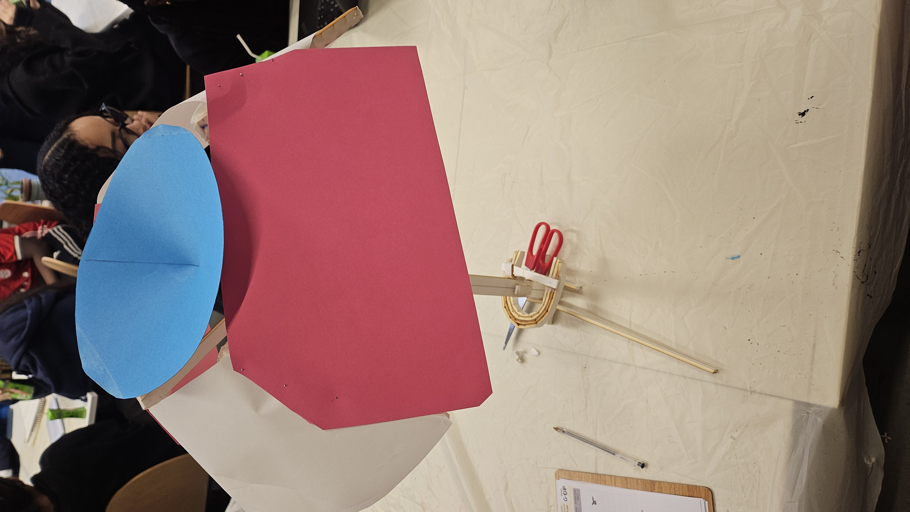
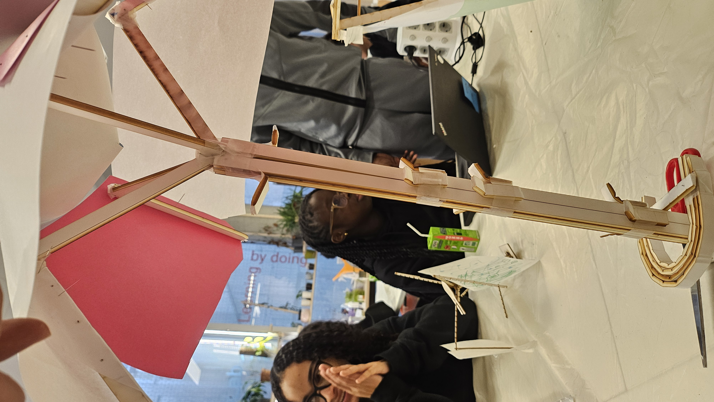
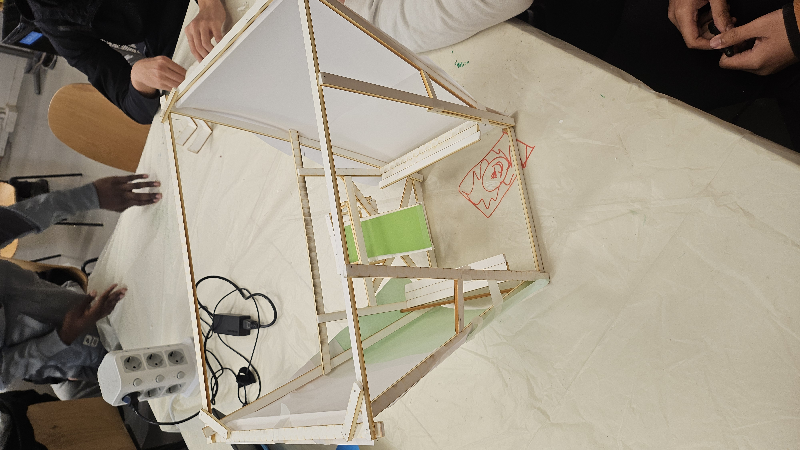

💡 Notre Projet : Le Jardin Suspendu
Bénéficiaires : Tout le monde (habitants, passants, sportifs...)
Fonction : Rafraîchir la ville et purifier l'environnement.
Éléments : Purificateur d'air, banc, poteau réservoir (robinets/brumisateurs), toit végétalisé, panneaux solaires.
IDÉE UNIQUE : Créer un abri végétalisé frais et autonome qui offre de l'eau, de la fraîcheur et un air purifié aux passants.
Maquette Structure : 1ère proposition (1:5)

Maquette Structure : 1ère proposition (1:5)

Maquette Structure : 2ème proposition (1:5)
